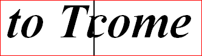
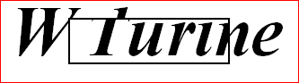
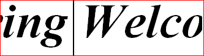
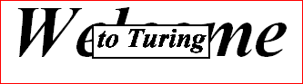
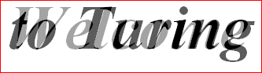

| picWipeLeftToRight |
The picture appears as a solid black bar sweeps from left to
right, "revealing" the new picture as the screen underneath
the picture is replaced.
In the picture below, "to Turing" is replacing the "Welcome"
underneath as the bar sweeps from left to right.

picWipeLeftToRight - half way through transition
|
|
picWipeRightToLeft, picWipeTopToBottom,
picWipeBottomToTop
|
As picWipeLeftToRight, except the bar sweeps in
different directions. |
| picWipeUpperLeftToLowerRight |
The picture appears as a solid black bar sweeps from the upper
left corner down to the lower right, "revealing" the new picture
as the screen underneath the picture is replaced.
In the picture below "to Turing" is replacing the "Welcome"
underneath as the bar sweeps from upper-left to lower-right.
 picWipeUpperLeftToLowerRight - half way through transition
picWipeUpperLeftToLowerRight - half way through transition
|
|
picWipeUpperRightToLowerLeft, picWipeLowerLeftToUpperRight,
picWipeLowerRightToUpperLeft
|
As picWipeLeftToRight, except the bar sweeps in
different directions. |
|
picWipeCentreToEdge, picWipeCenterToEdge
|
The picture appears inside an expanding black outlined box as it
sweeps from the centre out to the edges, "revealing" the new
picture as the screen underneath the picture is replaced.
In the picture below, "to Turing" is replacing the "Welcome"
underneath as the box expands from the centre out.

picWipeCentreToEdge - half way through transition
|
|
picWipeLeftToRightNoBar, picWipeRightToLeftNoBar,
picWipeTopToBottomNoBar, picWipeBottomToTopNoBar
picWipeUpperLeftToLowerRightNoBar, picWipeUpperRightToLowerLeftNoBar,
picWipeLowerLeftToUpperRightNoBar, picWipeLowerRightToUpperLeftNoBar,
picWipeCentreToEdgeNoBar, picWipeCenterToEdgeNoBar
|
As the constants above, expect there is no bar to mark the
sweep across. The bar generally looks better when displaying
an image over top of a similar one. No bar is usually
preferable when the images are completely different (as in
two photographs, and so on). |
| picSlideLeftToRight |
The picture "slides in" from the left as a solid black bar
sweeps from left to right, "pushing" the screen underneath
off the right edge of the drawing area.
In the picture below "to Turing" is replacing the "Welcome"
originally present, "pushing" the "Welcome" to the right
as "to Turing" slides in from the left.

picSlideLeftToRight - half way through transition
|
|
picSlideRightToLeft, picSlideTopToBottom,
picSlideBottomToTop
|
As picSlideLeftToRight, except the bar sweeps in
different directions. |
|
picSlideLeftToRightNoBar, picSlideRightToLeftNoBar,
picSlideTopToBottomNoBar, picSlideBottomToTopNoBar
|
As the constants above, expect there is no bar to mark the
sweep across. The bar generally looks better when displaying
an image over top of a similar one. No bar is often
preferable when the images are completely different (as in
two photographs, and so on). |
| picGrowLeftToRight |
The picture "grows" from the left as a solid black bar
sweeps from left to right, "squeezing" the screen underneath
off the right edge of the drawing area.
In the picture below "to Turing" is replacing the "Welcome"
originally present, "squeezing" the "Welcome" to the right
as "to Turing" "grows" from the left.
 picGrowLeftToRight - half way through transition
picGrowLeftToRight - half way through transition
|
|
picGrowRightToLeft, picGrowTopToBottom,
picGrowBottomToTop
|
As picGrowLeftToRight, except the bar sweeps in
different directions. |
|
picGrowCentreToEdge, picGrowCenterToEdge
|
The picture "grows" from the centre as a outlined black box
sweeps from outward, replacing the screen underneath.
In the picture below "to Turing" is replacing the "Welcome"
originally present, as "to Turing" grows for the centre.

picGrowCentreToEdge - half way through transition
|
| picGrowLowerLeftToUpperRight |
The picture "grows" from the lower-left corner as a outlined
black box sweeps right and upward, replacing the screen
underneath.
In the picture below "to Turing" is replacing the "Welcome"
originally present, as "to Turing" "grows" from the lower-left.
 picGrowLowerLeftToUpperRight - half way through transition
picGrowLowerLeftToUpperRight - half way through transition
|
|
picGrowUpperLeftToLowerRight, picGrowLowerRightToUpperLeft,
picGrowUpperRightToLowerLeft
|
As picGrowLowerLeftToUpperRight, except the box sweeps in
different directions. |
|
picGrowLeftToRightNoBar, picGrowRightToLeftNoBar,
picGrowTopToBottomNoBar, picGrowBottomToTopNoBar
picGrowUpperLeftToLowerRightNoBar, picGrowLowerLeftToUpperRightNoBar,
picGrowUpperRightToLowerLeftNoBar, picGrowLowerRightToUpperLeftNoBar,
picGrowCentreToEdgeNoBar, picGrowCenterToEdgeNoBar
|
As the constants above, expect there is no bar to mark the
sweep across. The bar generally looks better when displaying
an image over top of a similar one. No bar is usually
preferable when the images are completely different (as in
two photographs, and so on). |
| picFadeIn |
The picture "fades in" over top of the image underneath it.
At the end of the transition, the new image completely
replaces the image underneath it.

picFadeIn - half way through transition
|
| picBlend |
This transition is somewhat different because it doesn't take
any time to execute. Instead, picBlend causes the
new image to be blended with the background. The
picBlend constant can be used by itself, in which case,
the final image is 70% the new image, 30% the old image. You
can also add a number from 1 to 100 to picBlend, in
which case, the blend is whatever was added from (1-100) of
the new image over top of the old image. (i.e. a transition
of picBlend + 15 would display an image that is
composed of 15% the new image and 85% the old image.)
picBlend - red star blended with blue circle
|